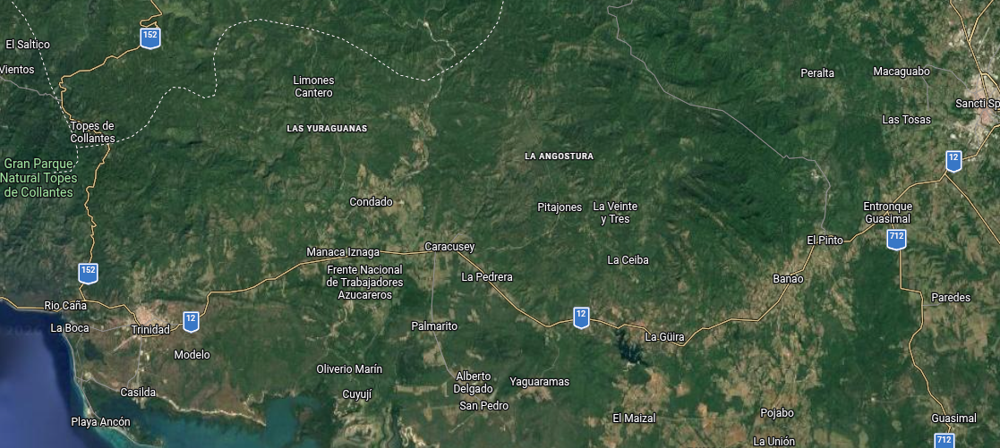

Maestros y voluntarios
Participaron docentes profesionales, alfabetizadores populares, obreros y estudiantes organizados en brigadas.
Alfabetización, conflicto armado y memoria en la antigua provincia de Las Villas. Una aproximación documental a los hechos que marcaron el corazón de Cuba entre 1960 y 1962.
En el centro montañoso de Cuba, la alfabetización rural y la confrontación armada se cruzaron en un territorio atravesado por profundas transformaciones políticas y sociales. El Escambray se convirtió en uno de los escenarios principales de la insurgencia anticastrista y de las operaciones estatales conocidas en Cuba como Lucha Contra Bandidos.
La escuela llegó a los bohíos, fincas y asentamientos de montaña. Para comprender la violencia que afectó a los alfabetizadores, primero hay que conocer la misión que los llevó hasta allí.
En 1961, Cuba emprendió una campaña nacional para enseñar a leer y escribir a cientos de miles de personas. En las zonas rurales de Las Villas, la tarea dependía de maestros voluntarios, brigadistas estudiantes y alfabetizadores populares que debían llegar a comunidades dispersas y de difícil acceso.
La campaña no consistía únicamente en abrir aulas. En numerosos parajes montañosos, la enseñanza se organizaba en viviendas campesinas, escuelas improvisadas, aserríos o espacios comunitarios. Las clases podían desarrollarse de noche, cuando los trabajadores regresaban de sus labores agrícolas. El farol, los manuales y la cartilla se convirtieron en símbolos de aquella movilización.
La antigua provincia de Las Villas —territorio que hoy comprende principalmente Villa Clara, Cienfuegos y Sancti Spíritus— reunía zonas rurales con comunicaciones difíciles. En el Escambray, esa dispersión geográfica coincidía con la existencia de grupos armados opositores al nuevo gobierno, lo que hizo especialmente vulnerable la labor de algunos alfabetizadores.

Participaron docentes profesionales, alfabetizadores populares, obreros y estudiantes organizados en brigadas.
La brigada estudiantil adoptó el nombre del maestro voluntario asesinado en el Escambray en enero de 1961.
La campaña fue clausurada oficialmente y el gobierno proclamó a Cuba «Territorio Libre de Analfabetismo».


Conrado Benítez García fue un maestro voluntario destinado a las montañas de Trinidad. Su asesinato, ocurrido el 5 de enero de 1961, dio nombre a la brigada estudiantil de alfabetización. Magalys Olmos López, también alfabetizadora, compartía con él el esfuerzo de levantar aulas en la zona; el relato de Granma cuenta que ella aceptó detenerse la víspera del crimen en casa de Felo González, mientras Conrado decidió continuar hacia sus alumnos.
Manuel Ascunce Domenech, con 16 años, llegó meses después a Limones Cantero como integrante de esa brigada. Junto a ellos deben recordarse Pedro Lantigua Ortega, campesino que acogió al joven en su casa, y Mariana de la Viña Naranjo, esposa de Lantigua, quien intentó proteger a ambos cuando llegaron los hombres armados. También resultan centrales los maestros voluntarios, las familias que facilitaron espacios para las clases y los campesinos que participaron como alumnos.
Se prepararon jóvenes y docentes para trabajar en comunidades rurales y zonas montañosas, incluidas áreas de Las Villas.
Comienza el año de alfabetización, con la movilización de maestros, brigadistas y alfabetizadores populares.
El maestro voluntario es asesinado en Tinajitas, en la zona montañosa de Pitajones, junto a campesinos que pretendían aprender a leer y escribir.
Se declara oficialmente a Cuba «Territorio Libre de Analfabetismo».
Un conflicto armado rural con actores, objetivos y memorias enfrentadas. El término oficial cubano y las denominaciones historiográficas no son neutrales: conviene reconocer quién habla y desde qué fuente.
Entre 1959 y mediados de la década de 1960, el Escambray fue uno de los principales escenarios de la resistencia armada contra el gobierno revolucionario. En la historiografía oficial cubana, las fuerzas insurgentes son denominadas «bandas contrarrevolucionarias» o «bandidos», y las operaciones estatales para enfrentarlas se conocen como «Lucha Contra Bandidos» (LCB).
En otros registros —incluidos documentos diplomáticos estadounidenses de la época y trabajos de historia política— aparecen expresiones como «oposición armada», «insurgencia anticastrista» o «guerrillas anticomunistas». Las denominaciones reflejan perspectivas políticas distintas. Por eso este expediente conserva el término histórico más extendido en Cuba, pero aclara su procedencia y evita presentar una etiqueta como si fuera una descripción neutral.
Las causas fueron múltiples: oposición a las transformaciones políticas y económicas posteriores a 1959, rechazo a la orientación comunista del gobierno, conflictos locales, participación de antiguos combatientes y miembros de los aparatos represivos de Batista, y enfrentamientos por el control del territorio. La documentación estadounidense de 1960 describía una oposición armada todavía fragmentada y con dificultades de organización; la documentación cubana enfatiza la coordinación contrarrevolucionaria y la intervención de Estados Unidos. No todos los grupos ni todos sus integrantes tuvieron idéntica trayectoria.


La prensa cubana atribuye a la banda encabezada por Ramírez el asesinato de Conrado Benítez y cinco campesinos en Tinajitas, en enero de 1961.
El relato de Granma identifica a Julio Emilio Carretero Esquijadillo como jefe de la banda que secuestró y asesinó a Manuel Ascunce y Pedro Lantigua en noviembre de 1961.
Su nombre aparece entre los dirigentes de grupos armados activos en Las Villas en testimonios y documentos de la época.
Manuel «Piti» Fajardo fue uno de los jefes de operaciones vinculados a la campaña militar en el Escambray durante 1960. Vitalio Acuña, «Vilo», aparece citado como segundo jefe de operaciones en la primera «Limpia del Escambray». Las milicias campesinas y las Milicias Nacionales Revolucionarias tuvieron una presencia variable según el sector y la fase del conflicto.
Los campesinos no fueron un bloque uniforme. Algunas personas colaboraron con las fuerzas gubernamentales, otras apoyaron a los grupos insurgentes y muchas procuraron sobrevivir en medio de la presión de ambos bandos. Las historias de Felo González, Pedro Lantigua y Mariana de la Viña muestran cómo las casas rurales podían convertirse en aulas, refugios o escenarios de violencia.
La respuesta del gobierno revolucionario combinó Ejército Rebelde, fuerzas policiales, milicias y unidades organizadas para la Lucha Contra Bandidos. La población campesina tuvo un papel decisivo como fuente de información, apoyo, refugio, vigilancia o, en ocasiones, como comunidad atrapada entre los contendientes. La presencia miliciana no fue una línea fija: cambió según las operaciones, el año y el sector.
En 1960 se desarrollaron operaciones de gran escala en el macizo montañoso. Manuel «Piti» Fajardo fue uno de los jefes vinculados a las operaciones en el Escambray y murió en un enfrentamiento en la carretera Trinidad–Cienfuegos el 29 de noviembre de 1960, según la reconstrucción biográfica consultada. En 1961 y 1962 continuaron las operaciones contra las bandas, mientras el conflicto se extendía y reorganizaba en otras zonas del centro del país.
Este mapa identifica lugares asociados a episodios documentados y áreas de actividad mencionadas en las fuentes. No señala posiciones tácticas, campamentos ni despliegues de unidades cuando no existe una referencia cartográfica fiable para fijarlos.
Antes del tercer apartado: una semblanza del adolescente que llegó a Limones Cantero como brigadista y alfabetizador.

Manuel Ascunce Domenech nació en Sagua la Grande, entonces provincia de Las Villas. Cuando tenía alrededor de dos años, su familia se trasladó a La Habana y él creció en el barrio de Luyanó. Cursó estudios en escuelas de ese barrio y se incorporó a organizaciones juveniles en los primeros años de la Revolución.
En 1961 solicitó incorporarse a las Brigadas Conrado Benítez. Recibió preparación en el campamento de Varadero y el carné de brigadista número 72792. En julio fue destinado a la zona de Limones Cantero, en el Escambray trinitario, donde vivió y alfabetizó en la casa del campesino Pedro Lantigua Ortega. La familia lo acogió como a uno más de sus hijos.
La vida de Ascunce transcurrió entre la escuela, su familia y la labor rural. Su historia permite observar la dimensión humana de la campaña: un estudiante adolescente que dejó temporalmente su hogar para enseñar en una región distante y marcada por la violencia política.
La reconstrucción biográfica se apoya en los perfiles publicados por Juventud Rebelde y Granma, además de una semblanza de Acercándonos Ediciones. Las fuentes coinciden en su edad, su llegada a Limones Cantero y su vínculo con Pedro Lantigua. Algunos detalles familiares proceden de relatos retrospectivos y deben leerse como testimonios, no como registros administrativos independientes.
Limones Cantero · 26 de noviembre de 1961. El asesinato del brigadista y del campesino Pedro Lantigua Ortega.
En la noche del 26 de noviembre de 1961, un grupo armado llegó a la vivienda de Pedro Lantigua Ortega, donde se encontraba Manuel Ascunce. Los hombres preguntaron por el brigadista. Lantigua intentó protegerlo y la esposa del campesino, Mariana de la Viña Naranjo, trató de ocultar su presencia.
Al escuchar la discusión, Manuel salió de la casa y se identificó como el maestro. Los intrusos secuestraron a ambos. Al día siguiente, sus cuerpos fueron encontrados cerca de la vivienda. El relato de la prensa cubana atribuye el asesinato a la banda de Julio Emilio Carretero Esquijadillo, jefe del grupo que actuaba en la zona.
El asesinato de Ascunce y Lantigua fue uno de los episodios más recordados de la violencia contra alfabetizadores y campesinos vinculados a la campaña. El caso tuvo una fuerte repercusión nacional, tanto por la edad del brigadista como por el vínculo de confianza entre el joven y la familia campesina que lo había acogido.


Jefe de la banda que, según el relato publicado por Granma, secuestró a Manuel Ascunce y Pedro Lantigua la noche del 26 de noviembre de 1961 y los asesinó.
Ascunce se incorpora a la labor alfabetizadora en la zona de Trinidad y es acogido en la casa de Pedro Lantigua Ortega.
Los hombres llegan a la vivienda, preguntan por el brigadista y se produce el secuestro de Ascunce y Lantigua.
Los cuerpos son encontrados cerca de la casa. La reconstrucción publicada por Granma menciona signos de tortura y muerte por ahorcamiento.
El caso provoca indignación y se convierte en un símbolo de la violencia que afectó a maestros, brigadistas y familias rurales durante el conflicto.
Mapa de consulta interactivo. Selecciona los puntos para abrir una ficha histórica con contexto e imágenes relacionadas.
Territorio histórico de la antigua provincia de Las Villas y el macizo del Escambray. Fondo: captura de referencia de Google Maps.

Advertencia cartográfica: el fondo es una captura de referencia de Google Maps, no un mapa oficial. Los puntos se han situado según los nombres de localidad visibles en esa captura; Ciego Ponciano no tiene rótulo en ella, así que su posición es aproximada. Las localidades marcadas con ↑ o ← están fuera del encuadre. Tinajitas y Limones Cantero son áreas rurales aproximadas: las fuentes identifican la localidad o zona, pero no una coordenada verificable del punto del crimen. Los marcadores de milicias indican sectores o episodios, no posiciones tácticas ni bases permanentes.
Fotografías, retratos, memoriales y objetos visuales relacionados con la alfabetización y el conflicto. Pulsa cualquier imagen para ampliarla.
La página distingue entre testimonios y prensa cubana, documentos diplomáticos estadounidenses, repertorios geográficos y repositorios de imágenes. Los textos de la página son síntesis propias. Las imágenes se muestran desde los sitios que las publican; sus derechos y condiciones de reproducción pertenecen a sus respectivos titulares. Para una exposición pública, conviene verificar permisos de uso de cada fotografía.
Pulsa Escape para cerrar.